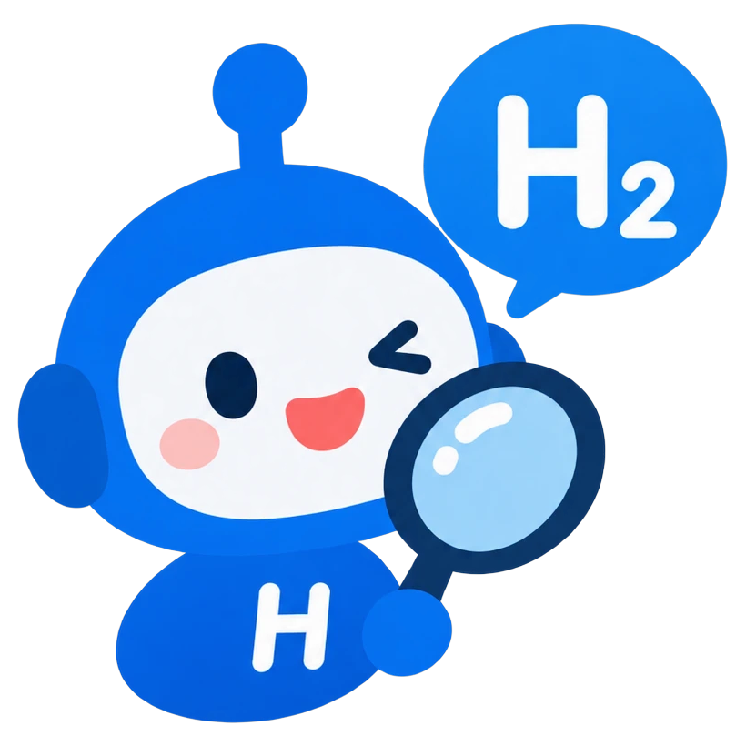
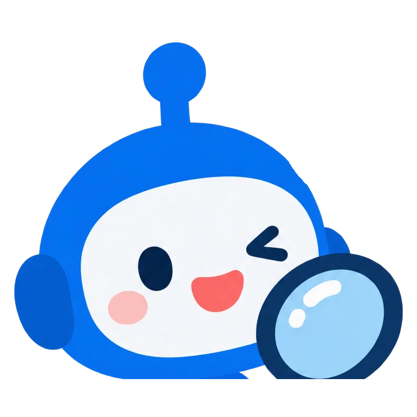

<!doctype html>
<html lang="ko"><head><meta charset="utf-8">
<title>수소문 로고 시안</title>
<link rel="stylesheet" href="https://cdn.jsdelivr.net/gh/orioncactus/pretendard@v1.3.9/dist/web/static/pretendard.min.css">
<style>
:root{--blue:#3182f6;--ink:#191f28;--sub:#4e5968;--mute:#8b95a1;--line:#e5e8eb;--bg:#f2f4f6}
*{box-sizing:border-box;margin:0}
body{font-family:Pretendard,sans-serif;background:var(--bg);color:var(--ink);width:1440px;padding:44px 52px}
h1{font-size:30px;font-weight:800;letter-spacing:-.5px}
.lead{font-size:17px;color:var(--sub);margin-top:8px}
.grid{display:grid;grid-template-columns:400px 1fr;gap:28px;margin-top:30px}
.card{background:#fff;border-radius:22px;padding:26px 28px}
.lab{font-size:14px;font-weight:700;color:var(--mute);margin-bottom:16px}
.icons{display:flex;align-items:flex-end;gap:22px}
.ic{display:flex;flex-direction:column;align-items:center;gap:8px;font-size:13px;color:var(--sub)}
.sq{display:flex;align-items:center;justify-content:center;overflow:hidden}
.sq img,.sq svg{width:100%;height:100%;object-fit:contain}
.task{margin-top:24px;background:#202020;border-radius:12px;height:56px;display:flex;align-items:center;gap:14px;padding:0 16px}
.task .t{width:24px;height:24px;border-radius:5px;background:#3a3a3a}
.task .on{position:relative}
.task .on:after{content:"";position:absolute;left:30%;right:30%;bottom:-8px;height:3px;border-radius:2px;background:#76b9ed}
.tabs{margin-top:24px;background:#dee1e6;border-radius:12px 12px 0 0;padding:8px 8px 0;display:flex;gap:4px}
.tab{display:flex;align-items:center;gap:8px;background:#fff;border-radius:9px 9px 0 0;padding:9px 14px;font-size:13px;width:250px;white-space:nowrap;overflow:hidden}
.tab.off{background:transparent;color:#5f6368;width:120px}
.fav{width:16px;height:16px;flex:none}
.zoom{margin-top:14px;font-size:12.5px;color:var(--mute)}
.app{background:#fff;border-radius:22px;overflow:hidden;display:flex;flex-direction:column}
.hd{height:64px;display:flex;align-items:center;padding:0 26px;border-bottom:1px solid var(--line);gap:10px}
.logo{display:flex;align-items:center;gap:9px;font-size:21px;font-weight:800;letter-spacing:-.6px}
.hd .nav{margin-left:auto;display:flex;gap:22px;font-size:15px;color:var(--sub);font-weight:600}
.hd .nav b{color:var(--ink)}
.body{display:grid;grid-template-columns:1fr 290px}
.chat{padding:26px 30px;display:flex;flex-direction:column;gap:18px;border-right:1px solid var(--line)}
.me{align-self:flex-end;background:var(--blue);color:#fff;padding:13px 17px;border-radius:18px 18px 4px 18px;font-size:15.5px;max-width:70%}
.ai{display:flex;gap:12px;align-items:flex-start}
.av{width:40px;height:40px;flex:none;border-radius:50%;overflow:hidden;display:flex;align-items:center;justify-content:center}
.av img{width:100%;height:100%;object-fit:contain}
.ai .nm{font-size:13.5px;font-weight:700;margin-bottom:6px}
.ai .bub{background:#f2f4f6;border-radius:4px 18px 18px 18px;padding:14px 17px;font-size:15px;line-height:1.6;color:#333d4b}
.ai .bub b{color:var(--ink)}
.src{margin-top:9px;display:flex;gap:6px}
.src span{font-size:12px;background:#e8f3ff;color:#1b64da;padding:4px 9px;border-radius:7px;font-weight:600}
.think{display:flex;gap:12px;align-items:center;font-size:14px;color:var(--mute)}
.side{padding:24px 22px;display:flex;flex-direction:column;align-items:center;text-align:center;justify-content:center;gap:10px;background:#fafbfc}
.side .t1{font-size:17px;font-weight:700}
.side .t2{font-size:13.5px;color:var(--sub);line-height:1.5}
.side .btn{margin-top:6px;background:var(--blue);color:#fff;font-size:14px;font-weight:700;padding:11px 18px;border-radius:12px}
.notes{margin-top:22px;display:grid;grid-template-columns:repeat(3,1fr);gap:16px}
.note{background:#fff;border-radius:16px;padding:16px 18px;font-size:14px;line-height:1.55;color:var(--sub)}
.note b{display:block;color:var(--ink);font-size:15px;margin-bottom:4px}
.tag{display:inline-block;font-size:13px;font-weight:700;color:#1b64da;background:#e8f3ff;border-radius:8px;padding:5px 10px;margin-right:8px;vertical-align:4px}
</style></head>
<body>
<svg width="0" height="0" style="position:absolute"><defs>
<symbol id="mark" viewBox="0 0 64 64">
  <mask id="mk"><rect width="64" height="64" fill="#fff"/>
    <rect x="14.5" y="27" width="35" height="24" rx="11" fill="#000"/>
  </mask>
  <g fill="currentColor">
    <circle cx="32" cy="8.5" r="5"/><rect x="30.2" y="10" width="3.6" height="9" rx="1.5"/>
    <rect x="9" y="18" width="46" height="39" rx="19" mask="url(#mk)"/>
    <rect x="4.5" y="31" width="7" height="14" rx="3.5"/><rect x="52.5" y="31" width="7" height="14" rx="3.5"/>
    <ellipse cx="25" cy="38" rx="3.2" ry="3.9"/>
    <path d="M36.5 37.5l5.5-3.5M36.5 37.5l5.8 1.4" stroke="currentColor" stroke-width="2.6" stroke-linecap="round" fill="none"/>
    <path d="M28 43.5q4 4 8 0" stroke="currentColor" stroke-width="2.6" stroke-linecap="round" fill="none"/>
  </g>
</symbol></defs></svg>
<div id="root"></div>
<script>
const V = (new URLSearchParams(location.search).get('v') || 'A').toUpperCase();
const mark = c => `<svg viewBox="0 0 64 64" style="color:${c}"><use href="#mark"/></svg>`;
const img = (src, pad = 0) => ``;
const D = {
  A: {
    name: 'A안 · 캐릭터 그대로',
    lead: '받은 마스코트 전체(말풍선·돋보기 포함)를 그대로 씁니다. 가장 친근하지만 작게 줄이면 형태가 뭉개져요.',
    icon: (s, r) => `<div class="sq" style="width:${s}px;height:${s}px;border-radius:${r}px;background:#fff;box-shadow:0 0 0 1px #e5e8eb">${img('m_full.png', s * .06)}</div>`,
    fav: ``,
    logo: `<span class="sq" style="width:34px;height:34px">${img('m_full.png')}</span>수소문`,
    av: `<div class="av" style="background:#e8f3ff">${img('m_full.png', 3)}</div>`,
    side: ``,
    notes: [['앱·탭 아이콘', '흰 바탕에 전신. 16px 탭에서는 무엇인지 알아보기 어렵습니다.'],
            ['상단 로고', '전신 + 수소문. 말풍선까지 들어가 로고가 다소 복잡해 보여요.'],
            ['AI 프로필', '하늘색 원 안에 전신. 귀엽지만 얼굴이 작게 보입니다.']]
  },
  B: {
    name: 'B안 · 얼굴만 잘라 쓰기',
    lead: '말풍선과 몸통을 빼고 머리와 돋보기만 씁니다. 파란 바탕 아이콘이라 작아도 표정이 보여요.',
    icon: (s, r) => `<div class="sq" style="width:${s}px;height:${s}px;border-radius:${r}px;background:linear-gradient(160deg,#4a93f8,#2272eb)"><div style="width:86%;height:86%;margin-top:8%;background:#fff;border-radius:50%;display:flex">${img('m_head.png', s * .02)}</div></div>`,
    fav: `<span class="fav" style="background:#3182f6;border-radius:4px;display:flex;align-items:center;justify-content:center"></span>`,
    logo: `<span class="sq" style="width:34px;height:34px">${img('m_head.png')}</span>수소문`,
    av: `<div class="av" style="background:#fff;box-shadow:0 0 0 1.5px #e5e8eb">${img('m_head.png', 1)}</div>`,
    side: ``,
    notes: [['앱·탭 아이콘', '파란 칸 + 흰 원 + 얼굴. 작업표시줄과 탭에서 토스 블루로 눈에 띕니다.'],
            ['상단 로고', '얼굴 + 수소문. 캐릭터 느낌은 살리고 말풍선은 뺐어요.'],
            ['AI 프로필', '흰 원 안에 얼굴. 답변마다 같은 얼굴이 보여 "에이전트" 느낌이 납니다.']]
  },
  C: {
    name: 'C안 · 단색 로고 + 컬러 캐릭터',
    lead: '로고·아이콘은 캐릭터를 단순하게 다시 그린 흰색 마크, 캐릭터 원본은 AI 프로필과 빈 화면에만 씁니다. 가장 깔끔해요.',
    icon: (s, r) => `<div class="sq" style="width:${s}px;height:${s}px;border-radius:${r}px;background:linear-gradient(160deg,#4a93f8,#2272eb);padding:${s * .14}px">${mark('#fff')}</div>`,
    fav: `<span class="fav" style="background:#3182f6;border-radius:4px;padding:1.5px;display:flex">${mark('#fff')}</span>`,
    logo: `<span class="sq" style="width:30px;height:30px;color:#3182f6">${mark('#3182f6')}</span>수소문`,
    av: `<div class="av" style="background:#e8f3ff">${img('m_head.png', 2)}</div>`,
    side: ``,
    notes: [['앱·탭 아이콘', '파란 칸 + 흰 단색 마크. 16px에서도 선명하고 다른 앱 사이에서 깔끔합니다.'],
            ['상단 로고', '파란 단색 마크 + 수소문. 공문서·발표 자료에도 그대로 쓸 수 있어요.'],
            ['AI 프로필', '컬러 얼굴. 캐릭터는 대화와 빈 화면에서만 등장해 균형이 맞습니다.']]
  }
}[V];
document.getElementById('root').innerHTML = `
<h1><span class="tag">${V}</span>${D.name}</h1>
<div class="lead">${D.lead}</div>
<div class="grid">
  <div class="card">
    <div class="lab">앱 아이콘</div>
    <div class="icons">
      <div class="ic">${D.icon(112, 26)}바탕화면</div>
      <div class="ic">${D.icon(64, 15)}시작 메뉴</div>
      <div class="ic">${D.icon(32, 8)}32px</div>
      <div class="ic">${D.icon(20, 5)}20px</div>
    </div>
    <div class="task"><div class="t"></div><div class="t"></div><div class="on">${D.icon(30, 7)}</div><div class="t"></div><div class="t"></div></div>
    <div class="zoom">작업표시줄 (실제 크기)</div>
    <div class="lab" style="margin-top:26px">브라우저 탭 아이콘 (16px)</div>
    <div class="tabs"><div class="tab">${D.fav}수소문 · 수소충전소 인허가</div><div class="tab off">새 탭</div></div>
  </div>
  <div class="app">
    <div class="hd"><div class="logo">${D.logo}</div><div class="nav"><b>상담</b><span>신청서</span><span>내 사업장</span></div></div>
    <div class="body">
      <div class="chat">
        <div class="me">충전소 완성검사는 어디에 신청하나요?</div>
        <div class="ai">${D.av}<div><div class="nm">수소문 AI</div>
          <div class="bub"><b>한국가스안전공사</b>에 신청합니다. 시설 공사를 마친 뒤 완성검사를 받아야 사용을 시작할 수 있어요.</div>
          <div class="src"><span>고압가스 안전관리법 시행규칙 제28조</span></div></div></div>
        <div class="think">${D.av}법령을 찾아보는 중...</div>
      </div>
      <div class="side">${D.side}<div class="t1">무엇이든 물어보세요</div><div class="t2">인허가 절차부터 서류 작성까지<br>수소문이 같이 찾아드려요</div><div class="btn">상담 시작</div></div>
    </div>
  </div>
</div>
<div class="notes">${D.notes.map(([a, b]) => `<div class="note"><b>${a}</b>${b}</div>`).join('')}</div>`;
</script>
</body></html>
